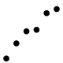

Function reference
version 2.1.0.9001
Plot basics
All ggplot2 plots with a call to ggplot(), supplying default data and aesthethic mappings, specified by aes(). You then add layers, scales, coords and facets with +. To save a plot to disk, use ggsave().
Save a ggplot (or other grid object) with sensible defaults
Layer: geoms
A layer combines data, aesthetic mapping, a geom (geometric object), a stat (statistical transformation), and a position adjustment. Typically, you will create layers using a geom_ function, overriding the default position and stat if needed.
Reference lines: horizontal, vertical, and diagonal
Bars, rectangles with bases on x-axis
A box and whiskers plot (in the style of Tukey)
Contours of a 2d density estimate
Hexagonal heatmap of 2d bin counts
Histograms and frequency polygons
Vertical intervals: lines, crossbars & errorbars
Line segments parameterised by location, direction and distance
Layer: stats
A handful of layers are more easily specified with a stat_ function, drawing attention to the statistical transformation rather than the visual appearance.
Compute empirical cumulative distribution
Compute normal confidence ellipses
Compute function for each x value
Bin and summarise in 2d (rectangle & hexagons)
Summarise y values at unique/binned x
Layer: position adjustment
All layers have a position adjustment that resolves overlapping geoms. Override the default by using the position argument to the geom_ or stat_ function.
Dodge overlapping objects side-to-side
Jitter points to avoid overplotting
Simultaneously dodge and jitter
Stack overlapping objects on top of each another
Layer: annotations
Annotation are special types of layer than don’t inherit global settings from the plot. Rhey are used to add fixed reference data to plot.
Annotation: high-performance rectangular tiling
Reference lines: horizontal, vertical, and diagonal
Aesthetics
The following help topics give a broad overview of some of the ways you can use each aesthetic
Colour related aesthetics: colour, fill and alpha
Differentiation related aesthetics: linetype, size, shape
Position related aesthetics: x, y, xmin, xmax, ymin, ymax, xend, yend
Scales
Scales control the details of how data values are translated to visual properties. Override the default scales to tweak details like the axis labels or legend keys, or to use a completely different translation from data to aesthetic. labs() and lims() are convenient helpers for the most common adjustments to the labels and limits.
Expand the plot limits, using data
Modify axis, legend, and plot labels
Sequential, diverging and qualitative colour scales from colorbrewer.org
scale_colour_brewerscale_fill_brewerscale_colour_distillerscale_fill_distillerscale_color_brewerscale_color_distiller
Position scales for continuous data (x & y)
scale_x_continuousscale_y_continuousscale_x_log10scale_y_log10scale_x_reversescale_y_reversescale_x_sqrtscale_y_sqrt
Position scales for date/time data
Position scales for discrete data
scale_colour_gradientscale_fill_gradientscale_colour_gradient2scale_fill_gradient2scale_colour_gradientnscale_fill_gradientnscale_colour_continuousscale_colour_datetimescale_colour_datescale_fill_continuousscale_fill_datetimescale_fill_datescale_color_continuousscale_color_gradientscale_color_gradient2scale_color_gradientn
Evenly spaced colours for discrete data
scale_colour_huescale_fill_huescale_colour_discretescale_fill_discretescale_color_discretescale_color_hue
scale_colour_identityscale_fill_identityscale_shape_identityscale_linetype_identityscale_alpha_identityscale_size_identityscale_color_identity
Create your own discrete scale
scale_colour_manualscale_fill_manualscale_size_manualscale_shape_manualscale_linetype_manualscale_alpha_manualscale_color_manual
scale_sizescale_size_continuousscale_radiusscale_sizescale_size_discretescale_size_areascale_size_datetimescale_size_date
Guides: axes and legends
The guides (the axes and legends) help readers interpret your plots. Guides are mostly controlled via the scale (e.g. with the limits, breaks, and labels arguments), but sometimes you will need additional cover over the guide apperance. Use guides() or the guide argument to individual scales along with guide_colourbar() or guide_legend().
Facetting
Facetting generates small multiples, each displaying a different subset of the data. Facets are an alternative to aesthetics for displaying additional discrete variables.
Wrap a 1d ribbon of panels into 2d
Facetting: labels
These functions provide a flexible toolkit for controlling the display of the “strip” labels on facets.
Label with mathematical expressions
Construct labelling specification
Coordinate systems
The coordinate system determines how the x and y aesthetics combine to position elements in the plot. The default coordinate system is Cartesian (coord_cartesian()), which can be tweaked with coord_map(), coord_fixed(), coord_flip(), and coord_trans(), or completely replaced with coord_polar().
Cartesian coordinates with fixed "aspect ratio"
Cartesian coordinates with x and y flipped
Transformed Cartesian coordinate system
Themes
Themes control the display of all non-data elements of the plot. You can override all settings with a complete theme like theme_bw(), or choose to tweak individual settings by using theme() and the element_ functions. Use theme_set() to modify the active theme, affecting all future plots.
Get, set, and modify the active theme
Programming with ggplot2
These functions provides tools to help you program with ggplot2, creating functions and for-loops that generate plots for you.
Define aesthetic mappings programatically
Extending ggplot2
To create your own geoms, stats, scales, and facets, you’ll need to learn a bit about the object oriented system that ggplot2 uses. Start by reading vignette("extending-ggplot2") then consult these functions for more details.
Format or print a ggproto object
Vector helpers
ggplot2 also provides a handful of helpers that are useful for creating visualisations.
Discretise numeric data into categorical
A selection of summary functions from Hmisc
Calculate mean and standard error
Compute the "resolution" of a numeric vector
Data
ggplot2 comes with a selection of built-in datasets that are used in examples to illustrate various visualisation challenges.
Prices of 50,000 round cut diamonds
2d density estimate of Old Faithful data
Fuel economy data from 1999 and 2008 for 38 popular models of car
An updated and expanded version of the mammals sleep dataset
Terms of 11 presidents from Eisenhower to Obama
Vector field of seal movements
Autoplot and fortify
autoplot() is an extension mechansim for ggplot2 it provides a way for package authors to add methods that work like the base plot() function, generating useful default plots with little user interaction. fortify() turns objects into tidy data frames: it has largely been superceded by the broom package.
Create a complete ggplot appropriate to a particular data type